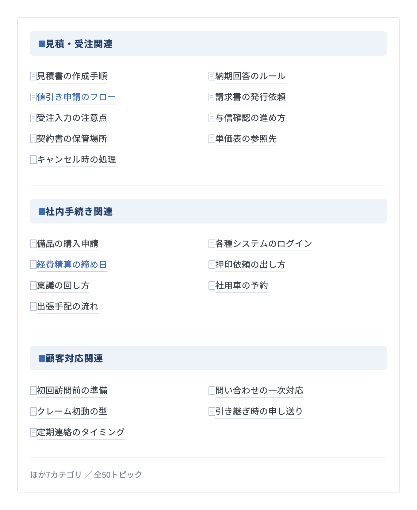
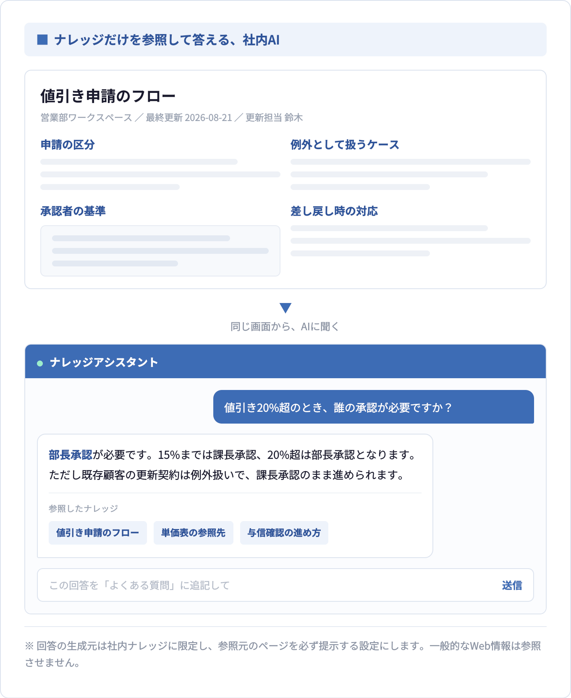
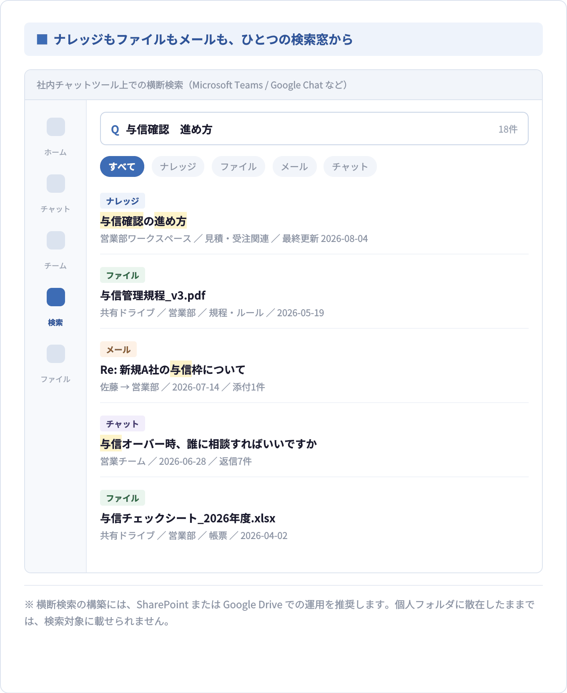
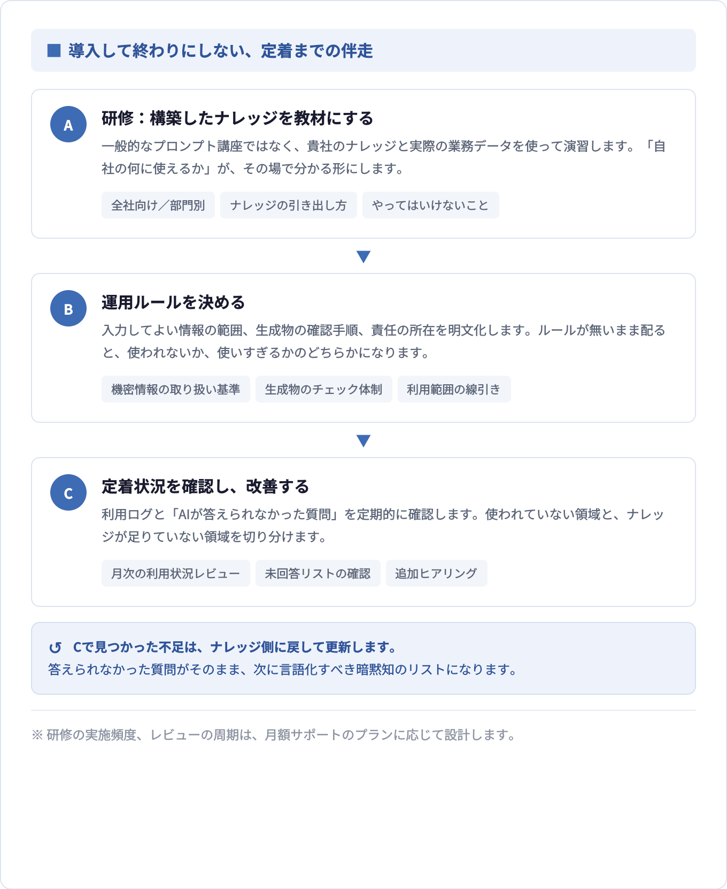

Services
Who we are
人が変わっても、拠点が増えても、経験者が不在でも、必要な情報にたどり着き、同じ基準で判断・行動できる。S.sentiaは、属人的な知識や分散した情報を組織の資産へ変えることで、継続的に成果を出せる組織づくりを支援する、業務プロセス改善コンサルタントです。
仕組みが整うと、組織はこう変わります。
情報を探す・聞く・教え直す時間が減り、判断と改善に時間を使える組織へ。
属人化リスクの解消
急な離脱でも
業務が止まらない
採用の幅が広がる
未経験者でも
採用できる
マネージャーの
管理負荷の軽減
手直し・クレーム対応の削減
他店舗展開・大量採用
ナレッジから研修教材を
数分で作成できる
Process
S.sentiaは、既存情報と現場の知識を棚卸しし、再現可能な形へ言語化したうえで、生成AIなどデジタルツールを使って有効活用できる環境まで設計します。
フォルダ・ファイル・業務情報の現在地を把握
社内にある共有フォルダ、ファイル、マニュアルなどを確認し、どこにどのような情報があるかを整理します。「すでにあるのに使われていない情報」と「まだ個人の頭の中にしかない情報」を可視化します。
この工程で確認すること
「ある情報」と「必要な知識」の差を埋める
既存資料を分類するだけでなく、業務を再現するために不足している情報を明らかにします。手順だけでは残らない、熟練者の判断軸、例外対応、顧客ごとの注意点、現場の工夫も、インタビューを通じて言語化します。
整理するナレッジ
手順だけでは、業務は再現できない
WHAT
何をするか
作業の順序と、押さえるべき勘所。マニュアルに書かれやすい領域です。
WHY
なぜそうするのか
その手順が存在する背景と目的。ここが欠けると、応用も改善もできません。
IF
どんな条件で変わるか
例外、分岐、顧客ごとの注意点。熟練者が無意識に使い分けている判断軸です。
引き出す暗黙知の4分類
ナレッジが日常業務で使われる仕組みへ
整理したナレッジを、組織の目的や利用者に合わせて活用できる環境へ落とし込みます。ツールを導入すること自体が目的ではなく、「誰が、いつ、何のために使うか」を起点に、最適な方法と運用を設計します。
活用例
構築する環境の例

業務に必要なフロー・ルールを一箇所に集約し、いつでも瞬時にアクセスできる環境を構築。Notion、SharePoint、Google Driveでの構築が可能です。

ナレッジを構築したら、生成AIを使ってナレッジソースだけから検索・編集できる環境を構築します。

ナレッジだけでなく、ドキュメント、メール、チャットからも横断検索ができる環境を構築します。
※ SharePoint、Google Driveでの構築を推奨します。

構築したナレッジを教材にした研修を実施します。生成AIの導入にとどまらず、組織として有効利用していくための運用方法の構築までを支援します。
※ 無料診断に費用は一切かかりません。オンライン（Google Meet / Microsoft Teams）でも承ります。